Лабораторная работа 3. Реализация серверной части на django rest. Документирование API.
Описание endpoint-ов
Информация о всех сотрудниках авиакомпании
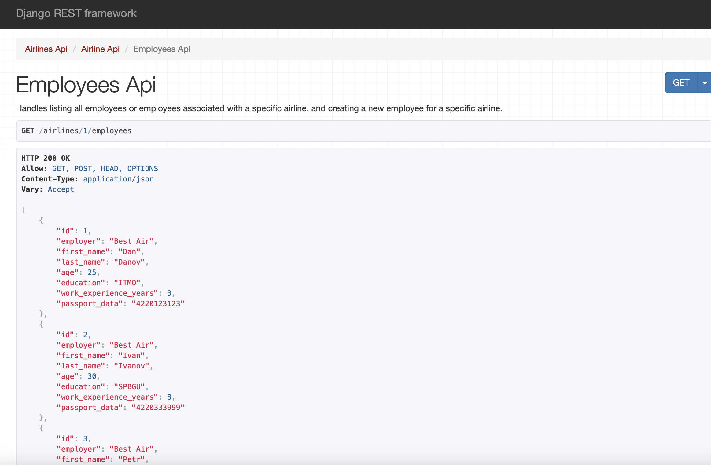
Информация о самолетах авиакомпании
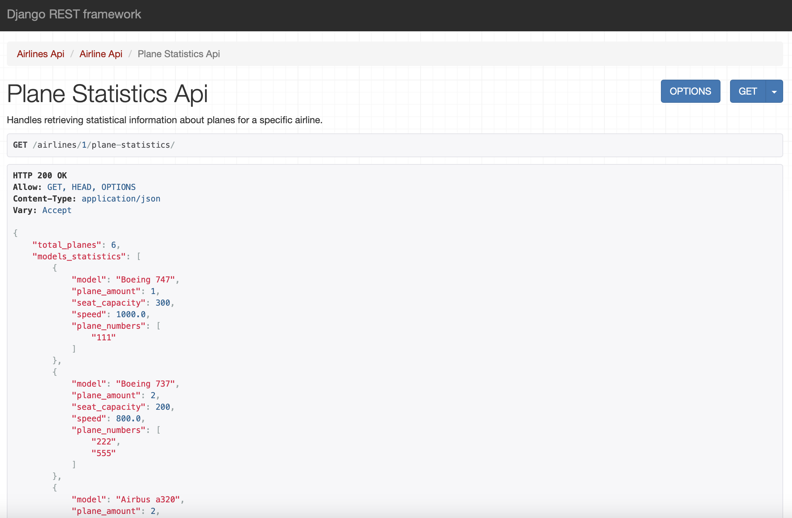
Информация о всех экипажах/Создание нового экипажа
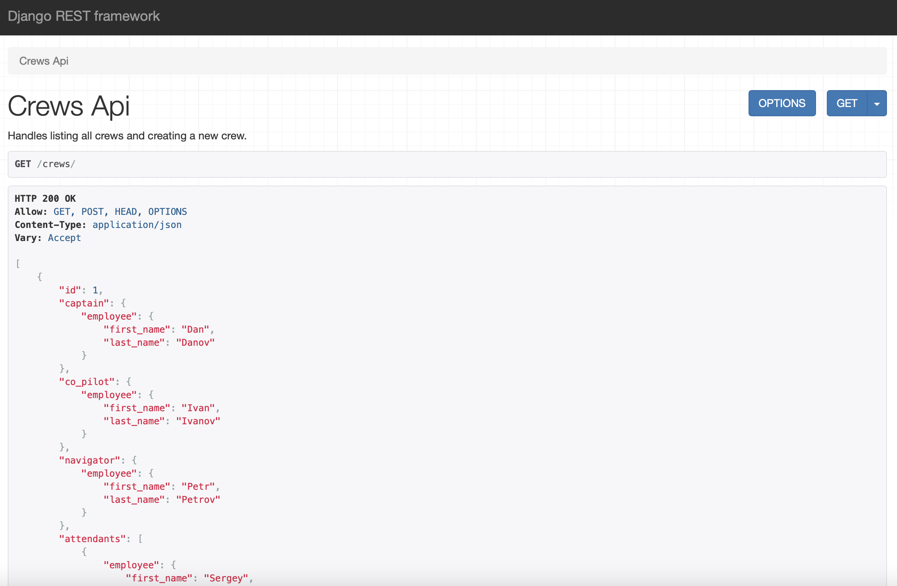
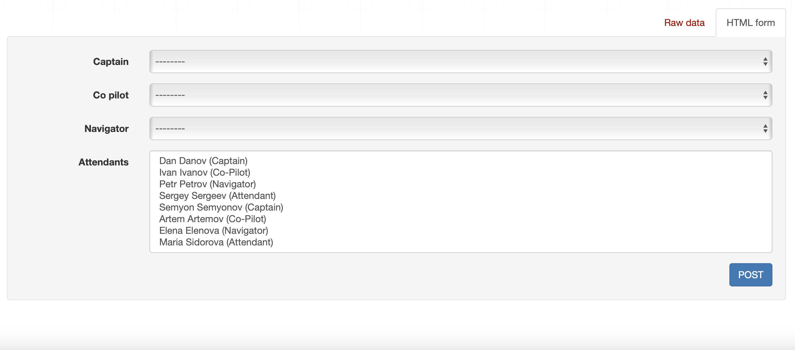
Список всех перелетов/Создание нового перелета
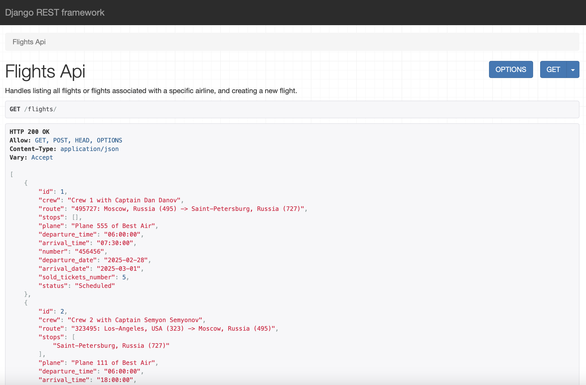
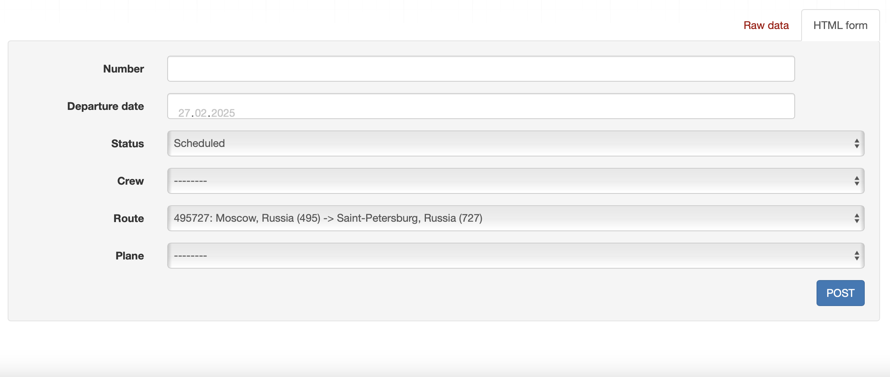
Самолеты, наиболее часто летающие по определенному маршруту
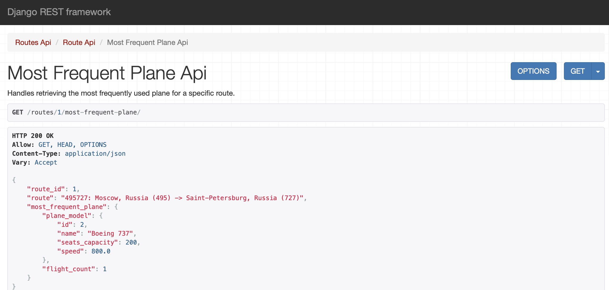
Все места на определенный рейс
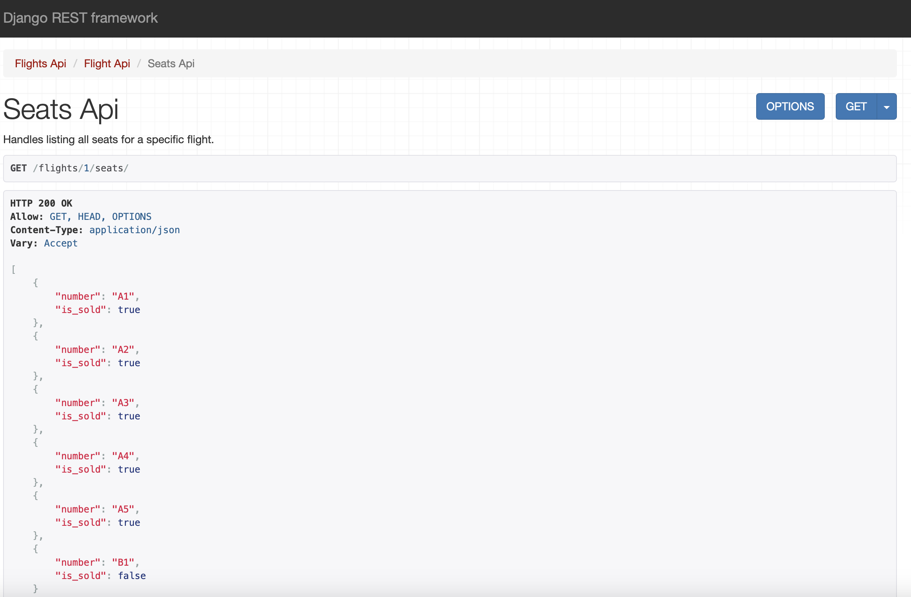
Все свободные места на определенный рейс
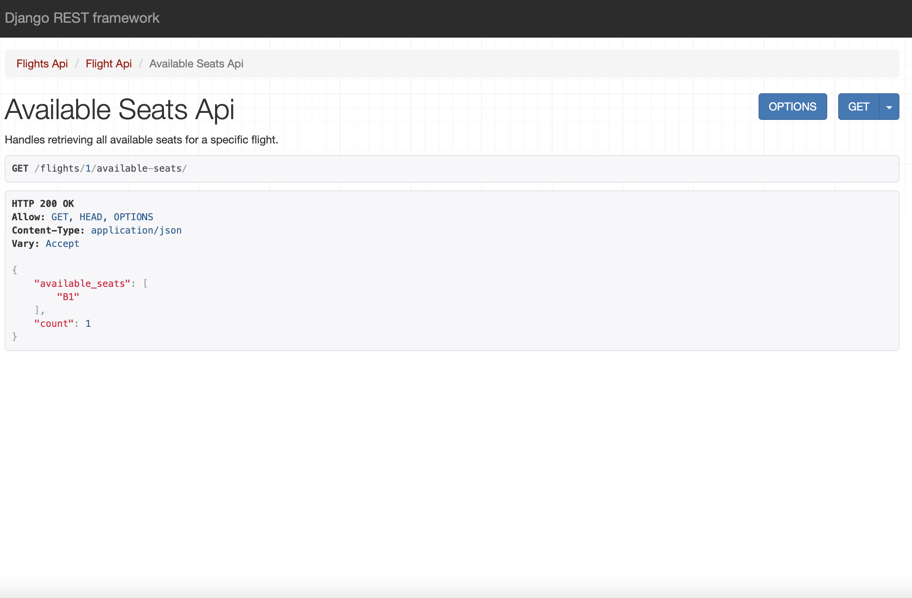
Забронировать место на определенный рейс
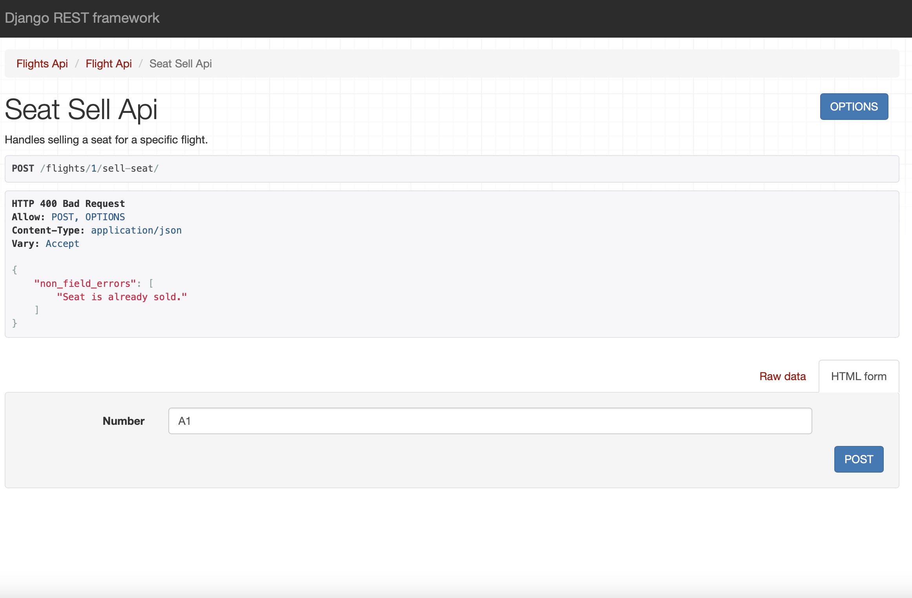
Посмотреть транзитные остановки/Добавить новую остановку
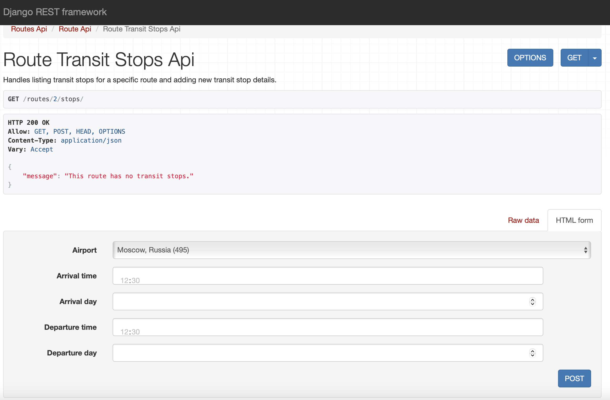
Djoser
Регистрация
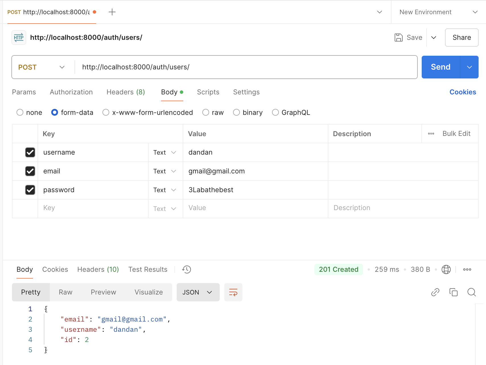
Получение токена
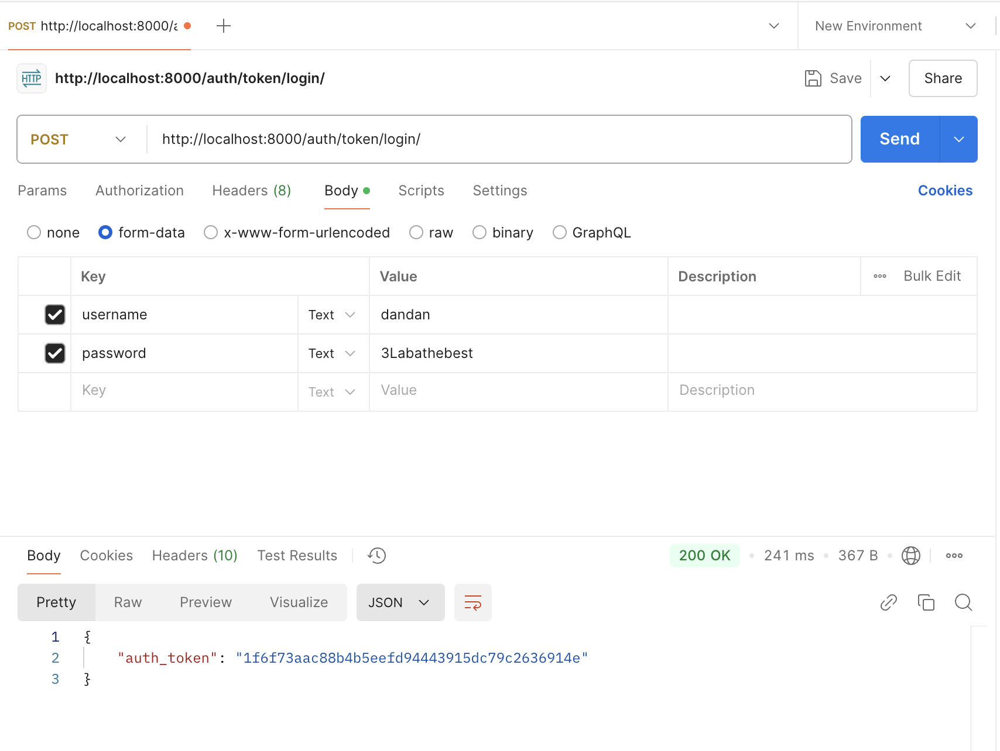
Текущий пользователь
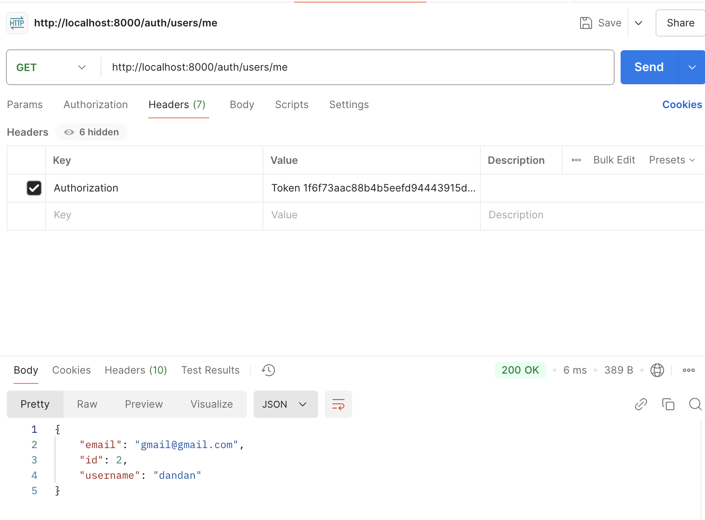
Создание сотрудника без авторизации/После авторизации
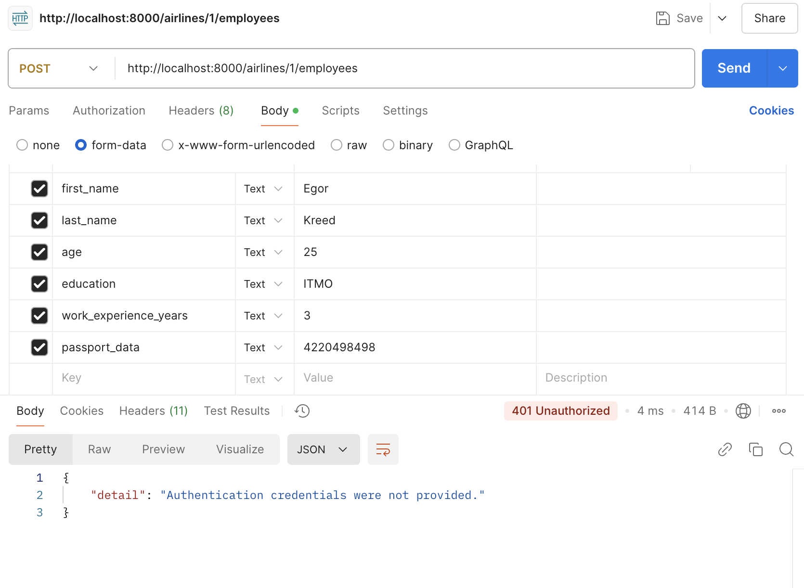
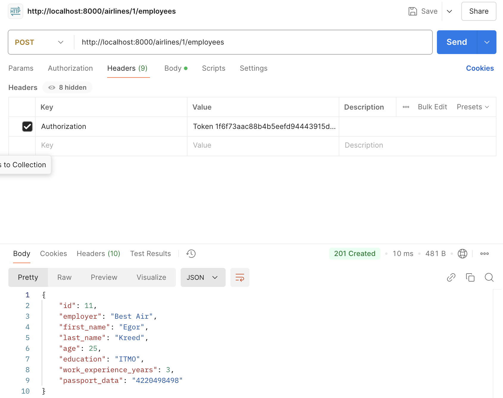